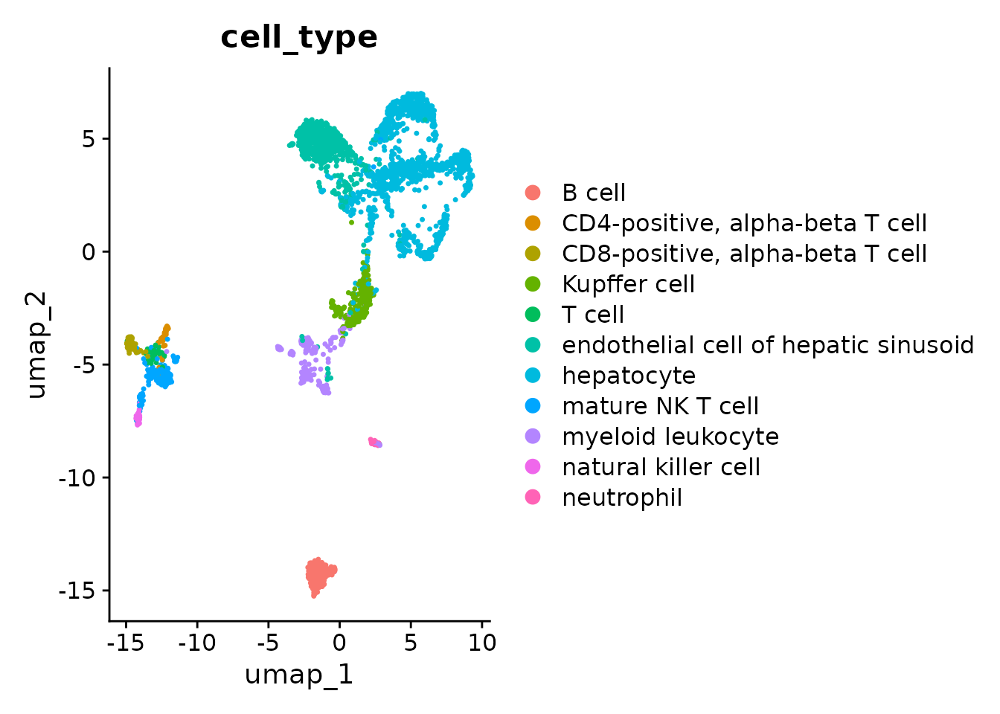

Normalizing full-length gene sequencing data
Source:vignettes/comp_bio_normalizing_full_gene_sequencing.Rmd
comp_bio_normalizing_full_gene_sequencing.RmdThis tutorial shows you how to fetch full-length gene sequencing data from the Census and normalize it to account for gene length.
Contents
- Opening the census
- Fetching example full-length sequencing data (Smart-Seq2)
- Normalizing expression to account for gene length
- Validation through clustering exploration
Opening the census
First we open the Census:
You can learn more about all of the cellxgene.census methods by accessing their corresponding documentation, for example ?cellxgene.census::open_soma.
Fetching full-length example sequencing data (Smart-Seq)
Let’s get some example data, in this case we’ll fetch all cells from a relatively small dataset derived from the Smart-Seq2 technology which performs full-length gene sequencing:
- Collection: Tabula Muris Senis
- Dataset: Liver - A single-cell transcriptomic atlas characterizes ageing tissues in the mouse - Smart-seq2
Let’s first find this dataset’s id by using the dataset table of the Census.
liver_dataset <- as.data.frame(
census$get("census_info")$get("datasets")
$read(value_filter = "dataset_title == 'Liver - A single-cell transcriptomic atlas characterizes ageing tissues in the mouse - Smart-seq2'")
$concat()
)
liver_dataset
#> soma_joinid
#> 1 125
#> citation
#> 1 Publication: https://doi.org/10.1038/s41586-020-2496-1 Dataset Version: https://datasets.cellxgene.cziscience.com/d32c289e-e881-4140-8db4-078ec04c942f.h5ad curated and distributed by CZ CELLxGENE Discover in Collection: https://cellxgene.cziscience.com/collections/0b9d8a04-bb9d-44da-aa27-705bb65b54eb
#> collection_id collection_name collection_doi
#> 1 0b9d8a04-bb9d-44da-aa27-705bb65b54eb Tabula Muris Senis 10.1038/s41586-020-2496-1
#> dataset_id dataset_version_id
#> 1 4546e757-34d0-4d17-be06-538318925fcd d32c289e-e881-4140-8db4-078ec04c942f
#> dataset_title
#> 1 Liver - A single-cell transcriptomic atlas characterizes ageing tissues in the mouse - Smart-seq2
#> dataset_h5ad_path dataset_total_cell_count
#> 1 4546e757-34d0-4d17-be06-538318925fcd.h5ad 2859Now we can use this id to fetch the data.
liver_dataset_id <- liver_dataset[1, "dataset_id"]
liver_seurat <- cellxgene.census::get_seurat(
census,
organism = "Mus musculus",
obs_value_filter = paste0("dataset_id == '", liver_dataset_id, "'")
)Let’s make sure this data only contains Smart-Seq2 cells.
table(liver_seurat$assay)
#>
#> 10x 3' transcription profiling 10x 3' v1
#> 0 0
#> 10x 3' v2 10x 3' v3
#> 0 0
#> 10x 5' v1 DroNc-seq
#> 0 0
#> Drop-seq Smart-seq
#> 0 0
#> Smart-seq v4 Smart-seq2
#> 0 2859
#> sci-RNA-seq
#> 0Great! As you can see this a small dataset only containing 2,859 cells. Now let’s proceed to normalize by gene lengths.
Normalizing expression to account for gene length
By default cellxgene_census::get_seurat() fetches all genes in the Census. So let’s first identify the genes that were measured in this dataset and subset the Seurat obect to only include those.
To this goal we can use the “Dataset Presence Matrix” in census$get("census_data")$get("mus_musculus")$ms$get("RNA")$get("feature_dataset_presence_matrix"). This is a boolean matrix N x M where N is the number of datasets, M is the number of genes in the Census, and a 1 entry indicates that a gene was measured in a dataset. (Note that Seurat objects have the transposed layout M x N.)
liver_seurat
#> An object of class Seurat
#> 52437 features across 2859 samples within 1 assay
#> Active assay: RNA (52437 features, 0 variable features)
#> 2 layers present: counts, dataLet’s get the genes measured in this dataset.
liver_dataset_joinid <- liver_dataset$soma_joinid[1]
presence_matrix <- cellxgene.census::get_presence_matrix(census, "Mus musculus", "RNA")
presence_matrix <- presence_matrix$take(liver_dataset_joinid)
gene_presence <- as.vector(presence_matrix$get_one_based_matrix())
liver_seurat <- liver_seurat[gene_presence, ]
liver_seurat
#> An object of class Seurat
#> 17992 features across 2859 samples within 1 assay
#> Active assay: RNA (17992 features, 0 variable features)
#> 2 layers present: counts, dataWe can see that out of all genes in the Census 17,992 were measured in this dataset.
Now let’s normalize these genes by gene length. We can easily do this because the Census has gene lengths included in the gene metadata under feature_length.
GetAssayData(liver_seurat[1:5, 1:5], slot = "data")
#> Warning: The `slot` argument of `GetAssayData()` is deprecated as of SeuratObject 5.0.0.
#> i Please use the `layer` argument instead.
#> This warning is displayed once every 8 hours.
#> Call `lifecycle::last_lifecycle_warnings()` to see where this warning was generated.
#> 5 x 5 sparse Matrix of class "dgCMatrix"
#> cell37846 cell37847 cell37848 cell37849 cell37850
#> ENSMUSG00000021124 . . 1611 . 4
#> ENSMUSG00000039377 . . 2040 . 43
#> ENSMUSG00000029439 . . . . .
#> ENSMUSG00000027792 378 . . . .
#> ENSMUSG00000074896 . . . . .
gene_lengths <- liver_seurat$RNA@meta.features$feature_length
liver_seurat <- SetAssayData(
liver_seurat,
new.data = sweep(GetAssayData(liver_seurat, slot = "data"), 1, gene_lengths, "/")
)
GetAssayData(liver_seurat[1:5, 1:5], slot = "data")
#> 5 x 5 sparse Matrix of class "dgCMatrix"
#> cell37846 cell37847 cell37848 cell37849 cell37850
#> ENSMUSG00000021124 . . 0.9993797 . 0.00248139
#> ENSMUSG00000039377 . . 0.8955224 . 0.01887621
#> ENSMUSG00000029439 . . . . .
#> ENSMUSG00000027792 0.05607477 . . . .
#> ENSMUSG00000074896 . . . . .All done! You can now see that we have real numbers instead of integers.
Validation through clustering exploration
Let’s perform some basic clustering analysis to see if cell types cluster as expected using the normalized counts.
First we do some basic filtering of cells and genes.
cells_per_gene <- rowSums(GetAssayData(liver_seurat, slot = "counts") > 0)
genes_per_cell <- Matrix::colSums(liver_seurat$RNA@counts > 0)
liver_seurat <- liver_seurat[cells_per_gene >= 5, genes_per_cell >= 500]Then we normalize to account for sequencing depth and transform data to log scale.
liver_seurat <- Seurat::NormalizeData(
liver_seurat,
normalization.method = "LogNormalize",
scale.factor = 10000
)Then we subset to highly variable genes.
liver_seurat <- Seurat::FindVariableFeatures(
liver_seurat,
selection.method = "vst",
nfeatures = 1000
)And finally we scale values across the gene axis.
all.genes <- rownames(liver_seurat)
liver_seurat <- Seurat::ScaleData(liver_seurat, features = all.genes)Now we can proceed to do clustering analysis.
liver_seurat <- RunPCA(
liver_seurat,
features = VariableFeatures(object = liver_seurat)
)
liver_seurat <- FindNeighbors(liver_seurat, dims = 1:40)
liver_seurat <- RunUMAP(liver_seurat, dims = 1:40)
DimPlot(liver_seurat, reduction = "umap", group.by = "cell_type")
With a few exceptions we can see that all cells from the same cell type cluster near each other which serves as a sanity check for the gene-length normalization that we applied.
Don’t forget to close the census.
census$close()